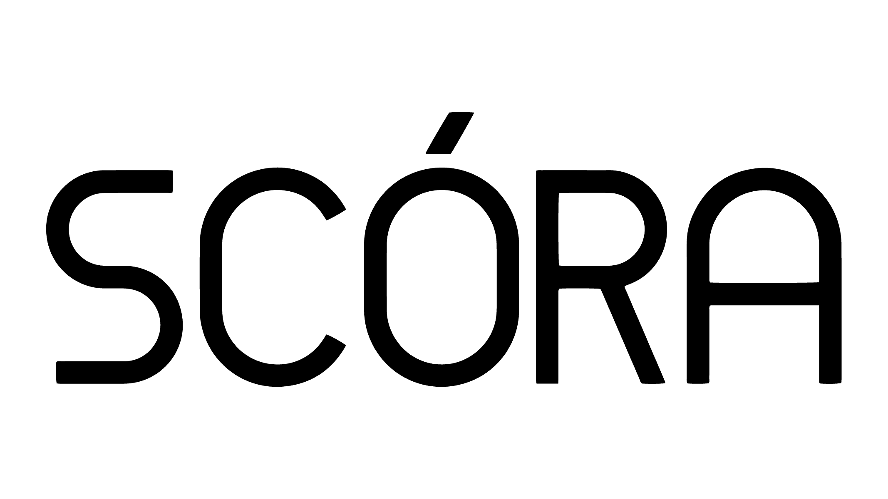
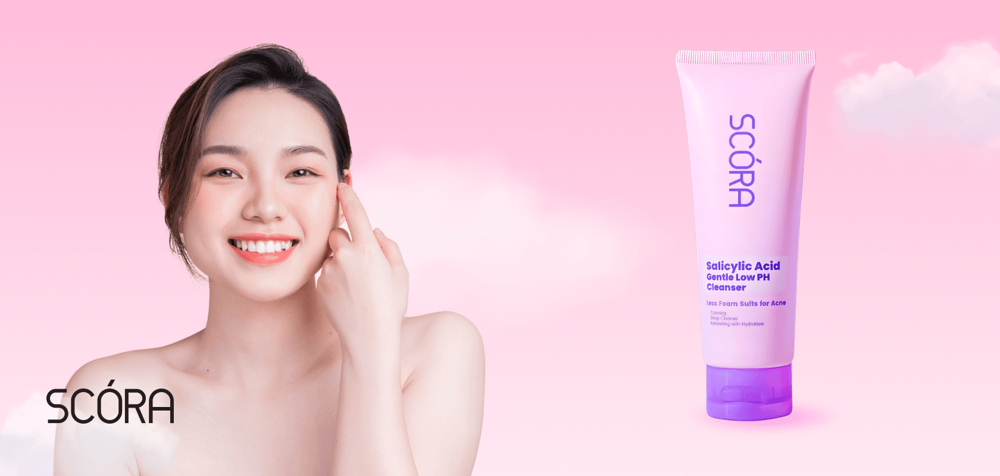

Scora
Anti-Counterfit & Data Analytic

Kisah di Balik Scora
Scora hadir dengan visi untuk menjadi brand kecantikan lokal yang menghadirkan produk berkualitas tinggi dengan harga terjangkau. Terinspirasi oleh kebutuhan konsumen modern yang mengutamakan efektivitas dan keamanan, Scora berkomitmen untuk terus berinovasi dengan menggunakan bahan berkualitas dan teknologi terkini dalam setiap produknya.

Pengenalan Singkat Scora
Scora adalah brand kecantikan lokal yang berfokus pada produk perawatan kulit dan kecantikan dekoratif. Dengan pendekatan yang ramah kulit dan berbasis riset, Scora berhasil menciptakan berbagai produk seperti skincare, makeup, dan produk perawatan tubuh yang telah dipercaya oleh ribuan pelanggan di seluruh Indonesia.
Mengapa Scora Memilih Shieldtag
Dalam industri kecantikan yang berkembang pesat, risiko produk palsu menjadi ancaman serius. Scora memilih Shieldtag untuk memastikan setiap produk yang dijual memiliki identitas unik yang dapat diverifikasi oleh konsumen, sehingga kualitas dan keaslian produk tetap terjaga.
Domisili, Distribusi, dan Ketersediaan Produk
Berkantor pusat di Jakarta, produk Scora tersedia di berbagai kota besar melalui toko resmi, marketplace, dan e-commerce ternama. Hal ini memastikan produk Scora dapat dengan mudah diakses oleh pelanggan di seluruh Indonesia.